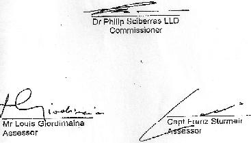

1.1 The present inquiry arose from the disappearance of Piper Lance aircraft (PA32) registration 9H-ABU en route from Djerba to Malta on 3rd December 1995.
1.2 In terms of Regulation 9 of the Civil Aviation (Investigation of Accidents) Regulations, 1956, to which the Civil Aviation Act (No. XL 111/1972) refers, the Minister for Transport. Communications and Technology, as the Minister responsible for Civil Aviation, set up this Public Inquiry to delve into the causes and circumstances of the accident to the forementioned aircraft (DOC. A).
1.3 By letter dated 4th December 1995 the Minister appointed Dr Philip Sciberras as Commissioner, and Capt Franz Sturrneir and Mr Louis Giordimiana as the two Assessors on the Board of Inquiry.
1.4 This inquiry consumed four long years for a number of reasons, not least of which bureaucratic delays, during which various witnesses testified in the 18 effective sittings held. Their testimony covered a range of topics: pilot information and licensing, maintenance of the aircraft, search and rescue operations, wreckage information and experts investigations and analysis.
1.5 In order to unravel the rather complicated issues which confronted the Board, we will give details on aircraft Information, pilot's experience, pilot's medical fitness and available licenses, the flight, wreckage Information, conclusions and recommendations.
2. AIRCRAFT2.1 Aircraft Information
| Manufacturer | PIPER AIRCRAFT CORP. USA |
| Model | PIPER LANCE PA32R-300 |
| Serial No. | 32R-77 80410 |
| Date Of Construction | 23rd May 1977 |
| Current Registration | 9H-ABU |
| Registered Owner | Mr Carmelo Bartolo |
| Operator | Sun Aviation Co Ltd |
| Certificate of Airworthiness | Transport Category (Passenger) |
| Engine | Lycoming Model 10-540-K1G5D |
| Serial Number | L1666653-4BA |
| Propeller Make | Hartzell |
| Propeller Model | HC-C3YR-1RF |
| Hub Serial No. | DY 3095 A |
| Blades Serial No. | H 66451, 66452.,66457 |
2.2 The Aircraft Manual issued by Piper Aircraft Corporation specifies that the Piper Lance is a single engine, retractable landing gear, all metal airplane. It has seat1ng for up to seven occupants and two separate one hundred pound luggage compartments. 2.3 We were told by Mr Alfred Fenech, Administration Manager of NCA International, in the sitting of 21st August 1997, that the aircraft was to his knowledge equipped with an ELT (Emergency Locator Transmitter).
2.4 The above was confirmed by Mr Joe Sultana, Director Operations Malta Department of Civil Aviation In the sitting of 5th June 1996, who moreover provided us with supplementary information such as survival equipment on Board the aircraft. Furthermore this witness exhibited these documents:
1. Certificate of Airworthiness (DOC. JS10)
2. Aircraft Station License (DOC. JS11)
3. Certificate of Registration (DOC. JS12)
2.5 This witness stated that, "The certificate of Airworthiness of the aircraft which is certificate number 66/1 which was issued on the 15th January 1992 and which has got a last entry made on the 19th January 1995, certifies that the aircraft is considered to be airworthy at the time and the certificate was renewed for the period of 16th January 1995 to 15th January 1996 and therefore this means that the certificate of airworthiness of the aircraft was valid at the time of the incident." For correctness sake it must be pointed out that the Bureau Veritas certificate refers to the 17th January 1995 - 16th January 1996.
2.6 It is recorded from the testimony of Alfred Fenech that his company NCA was contracted to do all the maintenance for both Excelair and Sun Aviation. It is important to highlight that Article 4.3 of the Aircraft Maintenance Agreement between NCA and Sun Aviation (DOC JS21) stipulates that Sun Aviation shall have the responsibility for, "the control of aircraft airworthiness".
2.7 As regards aircraft maintenance, the schedule lays down mandatory periodic aircraft engineering inspections, detailed in DOC. JS22. Witness Alfred Fenech confirmed that, "the way the inspection schedule runs, the aircraft is inspected every 50 hours and 100 hours and the last 100 hours inspection was carried out in September, beginning of September 1995" (Sitting 24th June 1999).
2.8 The same witness recounts that occasionally his Company also conducted unscheduled maintenance on snags that occurred during the use of the aircraft, but his Company was never requested by the aircraft owner to carry out pre-departure checks.
2.9 It appears from Aircraft Maintenance Records that the last scheduled maintenance conducted on airframe, engines and propellers took place on 6th September 1995, while the last entry recorded for avionics inspection was on 27th March 1993. The aforementioned witness furthermore testified that, following a check of the aircraft alternator, the latter was replaced with a new one on 30th June 1994. We are told by the witness in the sitting of 22nd April 1999 that as a result of the alternator failure, interference with the aircraft radio communications system was established and subsequently rectified.
2.10 In the three sittings in which he tendered his evidence, Alfred Fenech refers to an inspection at NCA facilities around the 2nd November 1995, during which visit an inspection was carried out on the vacuum pump, adding that there was nothing wrong with the component.
2.11 At the sitting of 21st August 1997, the aforesaid Alfred Fenech states that NCA did not have any agent at Djerba, but if, "problems arose at the outstation, his company would be contacted. This is confirmed by Arthur Day, ex-Chief Pilot with Excelair (sitting 5th June 1997). Alfred Fenech moreover states that Carmelo Bartolo never requested such a service.
2.12 From the Bureau Veritas report dated 17th January 1995 and forming part of DOC JS 47, it was ascertained that the aircraft was in an airworthy condition and was recommended that the Certificate of Airworthiness be renewed for the subsequent year. The Board notes that the renewal date on the certificate has been erroneously entered as 17th January 1996 instead of 17th January 1995. This is obviously a genuine mistake as is evident from other dates on the same document.
3. PILOT INFORMATION3.1
| Commander | Carmelo Bartolo |
| Date of Birth | 7th March 1948 |
| Address | 136 Paris Street, Zebbug, Malta |
| Nationality | Maltese |
| Pilot license | FAA CPL/IR number 2442642 |
| Date of Issue | 10th April 1995 |
| Aircraft ratings | Single Engine/Multi Engine/Land |
| Instrument rating | Issued 10th April 1995 |
| Medical certificate | First Class |
| Renewed | 23rd November 1995 |
| Flying experience | Total 1,686 hours as at 10/04/1995 |
| Total on type | No records available |
| Total in last 24 hours | 2 hours |
| Total In previous 90 days | Unknown |
3.2 According to DOC JS 49, Carmelo Bartolo had obtained a Malta student pilot licence on the 5th March 1990, valid for two years, following his application on 13th February 1990, On 10th November 1990 he obtained an FAA Private Pilot's licence.
3.3 On 31st October 1990, as detailed in DOC JS50, Bartolo failed his Private Pilot license oral and flight test. On 3rd April 1995 he failed an instrument flight test (holding procedures). He eventually secured his CPL Instrument Rating on 10th April 1995. Prior to this he obtained a Commercial Pilot's License in 31st March '1994.
3.4 According to a fax dated 6th December 1995 sent to DCA by the United States Federal Aviation Administration Mr Bartolo held a first-class medical certificate issued on 13th May 1995 and renewed on 23rd November 1995 (DOC JS14/JS29) a flight instructor certificate and a commercial pilot's certificate. The fax message also stipulates that Mr Bartolo's commercial pilot privileges were limited to multi-engine aeroplanes. In single engine aeroplanes he was authorised only private-pilot privileges. His instrument privileges were valid for both single and multi-engine aeroplanes. These details were reconfirmed in a subsequent fax dated 27th June 1995.
3.5 We know from Joe Sultana's testimony and in a letter dated 2nd July 1999 sent by Mr. Sultana to the Chairman of this Board that Carmel Bartolo made a verbal enquiry about the Issue of a Maltese licence and for this purpose Noel Attard (Licensing Officer at DCA) requested some clarifications from FAA on Mr Bartolo's FAA licence privileges. Mr Sultana further submitted that there were never any further developments on this licensing matter and Mr Bartolo was never issued with a Maltese licence nor with a validation of his FAA licence. A copy of the letter with attachments is marked DOC. D.
3.6 On 25th March 1997 during one of the Board's visit to Tunisia, the Board was handed the wallet and contents by Lt. Loufini Salem, Chef de Brigade de la Garde Nationale Maritime, stationed at Mahdla. In the wallet there were among other things: One original FAA Commercial Pilot Licence restricted to Private Privileges, and a copy of this licence, with the restriction obliterated. This second Document was plastic sealed similar to the original FAA Document. The Board notes that this second Document is a photo copy of the original.
3.7 In her evidence of the 14th May 1997 Mrs Bartolo confirmed that the signatures on both the original licence and the photocopy were in fact her husband's. However, she could not explain why her husband had two licences. According to this same witness, in the sitting of 27th August 1996, this particular aircraft was the only one belonging to Sun Aviation and as far as she knew it was solely piloted by her husband Carmelo Bartolo. From other records it results that this aircraft was flown by other pilots, namely: FJ Sigersma and Joseph Attard (DOC JS 34 refers).
3.8 Witness Joe Sultana sustained at the sitting of the 2nd JuJy1996 that DCA did not accept the responsibility of ensuring that all the licences are valid as that is always the responsibility of the pilot. He further stated that under the Air Navigation Order the DCA can issue a Private Pilot's Licence. The same order provides that Private Pilots' Licences issued by the ICAO states are automatically recognised as valid in Malta and that an individual who is in possession of such a licence "need not carry out an examination or produce his licence to the Department". He further added that his Department does not keep records of license issued by foreign states to pilots flying in Maltese territory with a foreign licence.
3.9 It must be pointed out that Arthur Day stated at the sitting held 5th June 1997 that he ended his employment with this company on 3rd November 1995. Shortly after this two Pakistani pilots were employed with Excelair, but were not yet licensed by DCA to fly Maltese registered aircraft at time of incident (3rd December 1995). In point of fact the DCA had to give them special dispensation to fly out on the search and rescue mission.
4. THE FLIGHTMalta - Djerba Sector
4.1 Prior to the flight of the 3rd December 1995 this particular aircraft had operated to a number of destinations - Djerba, Catania, Monastir - between September and December 1995. This is confirmed in a list of flights for this period submitted by DCA (DOC JS34)
4.2 From Enemalta fuelling records it results that Mr Bartolo up lifted a fuel quantity of 264 litres. Doc JS33 refers.
4.3 The flight left Malta at 17:33 Hours GMT on 2nd December 1995. Before the flight Mr Bartolo was briefed by witness Spiridione Agius, Meteorological Officer at DCA Met Office (sitting 29th July 1996) about the weather conditions prevailing at the time, particularly the thunderstorms prevalent in the area on that particular afternoon. We are told that Capt. Bartolo was given the necessary documentation - the significant weather charts, the charts at 850 rnb and 700 rnb, the landing forecast for Djerba and the actual for Djerba, surface charts about the current situation and developments expected therefrom. According to the witness, Mr Bartolo acknowledged the explanations given to him "with a smile". Reference is made to the detailed account dated 4th December 1995 prepared by witness and exhibited by him on date of sitting (DOC SA 1).
4.4 Initially when testifying on 6th June 1996, witness Joe Sultana declared that the tape recording the radio communications of the departing flight from Malta had been recycled. However, when the Board reconvened on 29th July 1996 this same witness stated that there had been a misunderstanding and In fact he presented a transcript of the tape on all the three ATC frequencies on which the aircraft communicated with Malta. This relates from the time of departure up to the time of aircraft arrival on the FIR boundary. DOC. JS27 provides a detailed account of the radio communications between the aircraft and Malta ATC. Additionally Mr Sultana presented a radar plot of the aircraft track from Malta (DOC. JS 28).
4.5 DOC JS15 indicates that the aircraft had on Board four passengers, namely David Silts, General Manager MAPEL, Rodney Charles Wood, KCA employee, Omar M. Kleb and Libyan national Khallil Haddan. The first three passengers tendered their evidence in the sittings held on 21st August 1997 and 22nd April 1999. All three witnesses also sent written replies to the questionnaire which was sent out to them by the Attorney General. These were exhibited in the sitting of 14th December 1996, DOCS. JS 38 A, B, C and RISP 1/2/3. Passenger Haddan could not be contacted to tender evidence. Passengers Wood and Sills had flown with the same pilot on previous occasions to Djerba.
4.6 The main gist of their testimony can best be summed up as follows:
(a) prior departure no briefings were given to them with respect to weather, emergency and safety procedures;
(b) the portable GPS was not functioning throughout the course of the flight and on engine start-up a slight screech was heard;
(c) the aircraft headed straight into a tremendous storm with flashes of lightning, heavy rain and hail and everything iced up. There was severe turbulence and the aircraft was thrown about;
(d) during the flight, because of the situation inside the aircraft, the captain looked worried, continuously rubbing his brow and checking or altering things around the dashboard;
(e) prior to landing there was a strong smell of burning rubber and the voltmeter and ampmeter had gone off, One of the passengers declared that every instrument went blank;
(f) after landing at Djerba the passengers noted that between the propeller and the engine cowling "some sort of drive belt was badly torn up and hanging out. In his evidence, Rodney Wood stated that "the captain just put his arm in and pulled out this belt all in bits and pieces";
(g) all three witnesses confirmed that the aircraft was in no fit state to return to Malta, and when they confirmed this with the Captain he said he was going to check it and repair the damage - which to him meant the availability of a spare part in Djerba; failing which he would have to overnight in Djerba. In this context Alfred Fenech, in the same sitting of the 21st August 1997, said that the time frame required to work. on and replace an alternator belt would amount to "a good three hours", given special tooling equipment.
This was further confirmed by Mr Paul Lehman, Piper Aircraft lnc., Air Safety Investigator, during the sitting of 14th May 1997, who said that, "in order to replace the alternator belt on this type of aircraft, the propeller would have to be removed, involving an in-depth repair, and is not something that can be done in a transit stop unless there is technical back-up".
4.7 From documentation collected, by the Board from the Tunisian Authorities - Handling Charges Receipt (DOC. HC 1) - Mr Bartolo landed at Djerba at approximately 20:29 local time and checked In at the Hadji Hotel. At the hotel Mt Bartolo met Mr Matthew Aquilina and Tadeusz Gorny (DOC. HR). Both Mrs. Antonia Bartolo and Mr. Joseph Aquilina (father of Matthew Aquilina) authenticated the signatures of Carmelo Bartolo and Matthew Aquilina on their respective hotel registration records during the sitting of 5th June 1997.
From Omar Kleb's testimony we know that Mr. Michael Williams who was known to him, was at the airport. These three persons together with Philip Farrugia and Desmond Boomer were the 5 (five) passengers on the flight to Malta. This is evidenced by the passenger manifest as communicated by the Djerba Emigration Authorities (DOC JS 8). From Mrs. Bartolo's testimony, we are also aware that all arrangements pertaining to passengers were done by Carmelo Bartolo himself.
4.8 The Board was Informed by Mrs. Antonia Bartolo that her husband phoned her at 20:45 Malta time of Saturday 2nd December informing her that he was going to stay overnight at Djerba for the storm to abate. Matthew Aquilina telephonically confirmed to his father that they would not be flying out due to bad weather. In his son's words "Hawn tempesta tkisser Djerba". Mandy Boomer, wife of passenger Desmond Boomer stated in the sitting of 29th July 1996 produced by this witness in the sitting of 27th June 1996 that her husband phoned her twice and informed her that the weather was bad, adding that he and other "guys", the identities of whom he didn't disclose, were going into a hotel.
4.9 The board was also informed by Mr. Lagha Ezzeddine, of the Tunisian Bureau for the Investigation Of Accidents, and also member of the Tunisian Commission which conducted the inquiry in to the disappearance of the Piper aircraft that, prior to the flight from Djerba to Malta, Mrs. Bartolo's attention was drawn during a pre-flight briefing to the severity of the weather, and he was offered a copy of the weather report which he declined with the words, "that's all right" (DOC JS 13). This situation was substantiated by witness Mrs. Cecilia Pelligrini Petit (in the sitting 27th August 1996) on her enquiries with the Director of Civil Aviation, Tunis.
4.10 Witness Joe Sultana and Major Joseph Mifsud, Chief Meteorological Officer at civil Aviation Department, produced records and satellite weather pictures in the sitting of the 18th June 1996 relating to the weather conditions for the 3rd December 1995, for the area covering Djerba and Malta (OC. JM 4). The latter witness was of the opinion that the unstable situation prevailing at the time was "fairly common" for this time of year especially over the Mediterranean. Major Mifsud further confirmed ho that a SIGMET, defined by same witness as a "warning to aircraft saying that there is great instability", was issued by the Malta authorities. This is evidenced by DOCs, JM5 and JM6 produced by this witness in the sitting of 27th June 1996 who further testified to a list of recipients of these two SIGMET's.
4.11 Mr Ezzaddine handed the Board copies of documents relative to Arrlval and Departure declarations signed by Mr Bartolo (DOC. HC 2). The Board notes that on these Documents the date of entry is mistakenly indicated by Mr Bartolo as the 2nd and 3rd of November and a compliment of four passengers. It is clear from other Documents and corrections on these same Documents that the correct dates were the 2nd and 3rd of December and on the out outbound flight from Djerba six persons including the captain Boarded the aircraft. Also presented to the Board by Mr. Ezzaddine was the Handling Charges bill at Djerba airport. The Board notes that the reference to the payer on this document is Excelair and not Sun Aviation as otherwise indicated on the above referred Arrival and Departure Documents.
4.12 Mr Ezzaddine also confirmed that after landing at Djerba, Mr. Bartolo did not request any maintenance assistance. Furthermore, on the day in question no other light aircraft took-off from Djerba airport. Notwithstanding the weather conditions, Mr. Bartolo decided to take-off and in effect the airport runway lights were switched on for the aircraft to depart.4.13 From the report of the Tunisian Bureau for the Investigation of Accidents, the flight to Malta obtained start-up clearance from Djerba Tower at 03:38 and takeoff clearance at 03:45.
4.14 From the tape transcripts, communication between the aircraft and Djerba Air Traffic Control continued until 04:10 when the controller requested the pilot to change the frequency with Malta. This is substantiated by the tape recording and the transcripts of the tape of the communications between aircraft and Djerba Control Tower exhibited by Mr. Joe Sultana in the sitting of 5th June 1996 (DOC JS2). Copy of the tape was made available by the Tunisian Authorities to the Board through the Ministry of Foreign Affairs in December 1998. Prior to this the Board and Attorney General had occasion to listen several times to the original tape at Djerba on their visit to Tunisia on 11th April 1997.
4.15 A copy of the original tape was eventually sent by the Board for examination at Farnborough by the UK Air Accidents Investigation Branch who submitted a summary report on the 8th March 1999. From this report exhibited as DOC 17 in the sitting of 22nd April 1999. one can highlight the following excerpts:
i. The last transmissions from aircraft were very broken. This could be an indication that the radio was at the limit of its range, operating under reduced power or shielded in some way.
ii. The second to last transmissions were broken and unintelligible, giving the impression that the controller heard something that was not recorded,
iii. The tone of the pilot's voice appeared to change slightly and the conversation from him appeared somewhat clipped.
iv. The content of the voice appeared to contain over this period more high frequencies giving an indication of some degree of stress or anxiety.
4.16 In the sitting of 18th June 1996, Major L Fenech, Senior Air Traffic Control Officer exhibited transcripts of radio communications (DOCs LF1 and'LF2). From transcript DOC LF1 it results that there was no contact between the aircraft and Air Traffic Control on the set frequency, except for contact by ATC with a Royal Air Maroc aircraft. This aircraft was instructed to try and establish contact with the Piper Lance which had not reported at the FIR boundary but there was no reply from the Piper. DOC LF2 is a transcript of communications made between Malta Air Traffic Control and other Air Traffic Control centres within the flight region of the aircraft and dealt with search and rescue communications.
5. SEARCH OPERATION5.1 As has already been disclosed above, no contact was made between the aircraft and Air Traffic Control. According to Edmond Mangion, Control Officer at the Air Traffic Services, the flight was treated at that stage as a communication failure. In the sitting of 5th June 1998 the said Mr Mangion added that when after an hour they had seen nothing on radar the ALERFA phase was started at 05.18 GMT. At this stage he stated that he telephoned Senior Air Traffic Controller, DCA and Joe Sultana, and the rescue co-ordination centre at AFM. Both Mangion and Major L Fenech (sitting 18th June 1996) gave a detailed explanation of the procedures where an aircraft fails to make, or loses, contact with Air Traffic Control. Witness Major L Fenech exhibited as DOC LF3 the training Document that the Air Traffic Control Training Centre uses in the instruction of Controllers regarding the alerting service. He further stated that the said procedures were in general followed except that his supervisor decided to skip the uncertainty phase.
5.2 Colonel C Vassallo, Principal Staff Officer AFM, testified during the sitting of the 27th June 1996 that he was responsible for search and rescue operations, The witness stated that he was notified of the missing aircraft at 06:10 GMT by Joe Sultana. Colonel Vassallo contacted the AFM operations centre to prepare the necessary charts for his arrival at the centre at 06:40 GMT. At 07:45 the rescue coordination centre informed Malta Radio to start broadcasting distress messages so that ships in the area would keep a lookout for any survivors.
5.3 Colonel Vassallo explained the difficulties encountered in dispatching aircraft to the search area due to lack of suitability of the aircraft, and that at the time AFM did not have at their disposal long range fixed wing aircraft and associated navigational and communications equipment; so much so that contact was made with Excelair, and briefing was given to the two Pakistani pilots to be able to carry out search procedures using Excelair aircraft. To quote Colonel Vassallo, one of the difficulties encountered was that "we did not have our own means to go and affect the search", adding, "nor do we have the equipment", meaning, "we are not a mission control centre which co-ordinates with satellite".
5.4 From a Document prepared by Colonel C Vassallo and exhibited by Attorney General on 2nd July 1996 (DOC ABB) the first aircraft; an Augusta Bell 212, registration 1-211, operated by the Italian Military Mission, was dispatched on search and rescue duties at 09:12 GMT. Other local civilian aircraft operators were called on to assist in the operation. Vessels, such as the Sauna Soula and Squalo also participated in the search, and oil rigs operating in the area were contacted for any sightings (DOC. JS 23). At 11:00GMT Colonel Vassallo was called by the US Embassy, offering their assistance and in fact at 14:00GMT a P3 Orion aircraft was dispatched from Sigonella Air Base, DOC ABS.
5.5 The search operations continued over the 3rd,4th,5th,6th,7th and 10th of December covering the area indicated by DOC CV 1 and concentrated on the FIR boundaries between Malta, Libya and Tunisia. From other documents on record, it results that both the Tunisians and Libyans assisted in the search operations, in conformity with ICAO recommendations (DOCS. JS 25 and JS 30).
5.6 During these operations various signals and other information were received from extraneous sources. These were followed up and investigated by Col Vassallo. Reference is made to his evidence during the same sitting. In particular as regards the distress signal monitored by satellite COSPASAR and received by the French receiving station based in Toulouse, it was ascertained that the signal could be attributed to a transmitter in Libya, Due to the strength of the Libyan signal, a possibility existed that other weaker distress signals would be interfered with and Colonel Vassallo requested the Libyan authorities to deactivate their transmitter.
5.7 Furthermore the same witness referred to a message from the Tunisian authorities regarding a distress call received from supply ship "Asperay". A similar distress signal is also alleged to have been received by the same authorities from the supply vessel "Gonfulut", It Is to be noted that Colonel Vassallo, in his evidence to the Board stated that he personally checked on these ships with Lloyds Maritime Information Service and was informed that Lloyds had no records about such ships
5.8 It results from DOC AM1 that following the recovery of the wreck, a search was carried out in November 1996 in the indicated area, wherein patrol boats, maritime patrol aircraft, MV Princess Dude a locally registered diving vessel chartered by the Malta Maritime authority, as well as AFM and civilian divers participated. This search proved unfruitful.
6. WRECKAGE6.1 By letter dated 11th October 1996 from Anthony Mangion, at the time Permanent Secretary in the Ministry for Transport Communications and Technology, brought to the attention of the Board copies of messages received from the Ministry of Foreign Affairs regarding items reported to have been found by a Tunisian trawler off the Gulf of Gabes. In his evidence at the sitting of the 14th November 1996, Mr Mangion exhibited copy of this letter and telefaxed messages (DOCS, AM-1, AM-2 and AM- 3), together with a set of photographs of the wreckage taken by the Maltese Charge d'Affaires in Tunis. Mr Manglon further submitted a photo copy also provided by the Charge d'Affairs, of the contents of a wallet reclaimed from the aircraft debris. In addition thereto he produced copy of letter dated 13th November 1996 with a copy of Note Verbal and an informal translation thereof regarding the conclusions of the enquiry commission of the Tunisian Directorate General of Civil Aviation following the finding of the wreckage. The Board was given a copy of the full original version in French of these same conclusions during its visit to Tunis on March 24th, 1997 (DOC, SP 2).
6.2 The Tunisian enquiry commission concluded that the recovered wreckage did not present "aucune trace d'incendle", and that the aircraft, "a subit un choc brutal avec la surface de l'eau" (DOC, AM-4). The above conclusion was later sustained by Paul Lehman In his evidence before the Board on 14th May 1997.
6.3 The members of the Board personally examined the wreckage on their visit to Mahdia on 25th March 1997, together with the Attorney General, the Maltese Charge d'Affaires, and a delegation from the Tunisian Ministry of Transport.
6.4 The recovered wreckage together with the wallet and its contents were released by the Tunisian Authorities and eventually brought to Malta. The wreckage was stored in an Air Malta maintenance hangar pending the examination thereof by the investigator Mr Paul Lehman sent by Piper Aircraft Inc. and following their offer of assistance to the DCA by fax dated 12th December 1996(refer DOC JB 3). Mr Lehman examined the wreckage on 12th and 13th May 1997. The wallet and its contents were personally handed to the Chairman of the Board and exhibited by him in the sitting of 14th May 1997. Eventually the Board nominated Dr. Anthony Abela Medici to conduct forensic tests thereon, His report (DOC AAM) was exhibited in the sitting held on the 21st August 1997.
6.5 Dr Abela Medici who testified at the above referred sitting stated that in his opinion, there was ample evidence to conclude that all the articles examined by him (wallet and contents) had been subjected to long term exposure to sea water and that he excluded any possibility of exposure of the same articles to ground water.
Both the Board and 'the Piper investigator Paul Lehman had occasion to observe that on the remains of the wreck sea crustaceans were clearly visible.
6.6 Senior Investigator Paul Lehman gave evidence under oath in the sitting of 14th May 1997, wherein he also exhibited a summary report (DOC PL1), together with piece of material/cloth (DOC PL2) and a set of photos (DOC PL3),
6.7 Additionally. Mr, Lehman later submitted a detailed report following his examination of the recovered wreckage (DOC. PL 4). In essence Mr Lehman's report highlighted the following aspects of his findings:
(a) The components recovered were the rudder pedals and tee-bar assembly pilot and co-pilot seat-belts, lower aft cockpit floor, two pieces of fuselage skin, throttle quadrant, flap handle and tunnel assembly, and trim and pitch servo.
(b) The name Piper was embossed on the rudder pedals.
(c) The seatbelt marked "TSO" was the same as that on the original equipment list.
(d) The gear retraction and the extension speed placard was the same as that on the missing aircraft.
(e) The number "80410" was written with a permanent marker under the carpeting on a web in the aft cabin area and that this denoted the serial number of the aircraft 9H-ABU.
(f) The two servo motors were components of an autopilot system used on 32R-300, 32R-301 and 32R-301T Piper aircraft only.
(g) The throttle quadrant was separated from the instrument panel. The throttle, mixture and propeller were found In the full forward position and the friction lock handle was jammed.
(h) The gear selector knob was in the extended position. The nose gear and auto gear extend lights were not illuminated at the time of impact.
(i) The flap handle was jammed near the 10 degree flap position but not in the detent. The handle was bent approximately 5 degrees to the left.
(j) Two flight control cables displayed signs of tension and overloading.
(k) One piece of fuselage skin indicated 35degree wrinkles starting at the rivet lines. Another piece of skin indicated 90degrees elbows running through the material. Both pieces of skin had two orange stripes.
(l) The seat belts were found in the buckled position, The female buckle was crushed aft and could not be unbuckled. There was stretching of the seat belt webbing.
6.8 At the sitting held 14th May 1997, Mr Lehman elaborated on a number of scenarios, following his thorough examination of the wreckage:
(a) By evidence of the wrinkled skin, the aircraft impacted the water surface at approximately 35degree angle nose down.
(b) The broken left rudder pedal was possibly the result of a left wing down attitude on impact.
(c) Portion of the aft cockpit floor on the left hand side was bent up 12°. This angle differs from the skin witness marks due to the fact that this piece was further aft, and
has less bending, but correlates with previous findings.
(d) Seat belt retaining bolts were "U" shaped indicating forward momentum on impact.
6.9 During the sitting at which he tendered his evidence, Mr Lehman made reference to the missing alternator belt and the depletion of the aircraft battery. He affirmed that a fully charged battery would render 30 minutes of energy. However, considering the energy required to start the aircraft engine, the remaining battery life would not be more than 10-15 minutes. Moreover he asserted that in flight, once the battery went flat, the pilot would have lost all communications, Distance Measuring Equipment, Auto Direction Finding, ATC transponder, stall warning horn, autopilot, normal landing gear extension, pilot tube heat, turn and bank indicator, instrument, cockpit, navigation and landing lights.
6.10 Mr Lehman referred to the possibility of an in flight break-up due to spatial disorientation as a result of loss of instrumentation with subsequent abnormal aircraft attitude. In his own words, referring to pilot behaviour in such a situation, "he could have got the aircraft inverted, rolled the airplane and structurally tore the airplane apart in flight which is very feasible, especially if you do not know what Is up or down or what is left or what is right". Besides, the aircraft may have actually been flown into the water.
6.11 Mr Lehman dwelled on the lack-of-electrical power scenario, elaborating on the fact that landing gear down indicating light bulbs had their filaments intact. The gear lever was found in the "down" position. The possibility for this selection of the gear was, "if he (the pilot) knew he was in trouble, to reduce airspeed". The selection of the gear would illuminate the light bulbs. If the bulbs were lit on impact, the filament would have disintegrated. In respect to the possibility of an on board fire or explosion, Mr Lehman testified that inspection of the wiring and fabric did not result in burning, singeing or sooting being evident.
Permits, Charges & Police Investigations7.0 SUPPLEMENTARY INFORMATION
A : Permits - Charges - Police Investigations
7.1 At the sitting of the 22nd April 1999 Joe Sultana confirmed that whilst Excelair, "Carmelo Bartolo's other company", had a permit to carry fare paying passengers, no such licence was ever issued to Sun Aviation. It must be pointed out that Excelair Ltd and Sun Aviation Ltd, though independent companies, were, in the words of Joe Sultana, "presumably owned and run by the same person", viz. Carmelo Bartolo.
7.2 From the DOC RT6 it transpires that Excelair were granted by the Minister responsible for Transport and Communications the right to operate aircraft on chartered services for reward or in connection with any trade or business, for a period of 5 years commencing 19th April 1993.
7.3 When asked in the sitting of 2nd July 1996 whether aircraft (9H-ABU) was operated by Sun Aviation or another company, Mr Sultana replied that from an advert by Euro Airserv Ltd in the local papers the aircraft under consideration was being made, or possible being made, available to Excelair for air taxi service. He further stated that Bartolo was asked to eliminate all reference to this particular aircraft in the advert. As a matter of fact the letter dated 18th September 1995 (DOC JS37) merely asks Mr Bartolo whether the marketing was being carried out with his knowledge and approval, to which he replied by letter dated 28th September 15195 that it was not.
7.4 This same witness expressed the view that the only way to determine whether the flight was a private or a public one was to question the persons on Board. He further added that he does not presume that the flight in question was a private one merely because of the fact that the company or the pilot were not authorised to carry passengers for reward; so much so that based on rumours that this aircraft was ferrying passengers for reward he referred the matter to the police for further investigation as his Department had doubts whether the flights operated by this aircraft were private flights.
7.5 Sultana further stated that DCA did follow-up the rumours. However, they did not carry out their own investigations. To quote this witness, "we short circuited the procedure and asked the Police to commence investigations directly". On this issue it is worthwhile to point out that the investigating Inspector of Police, Victor Gauci, reiterated in his report that, "DCA had an obligation to investigate from their end and assist the police in this matter".
7.6 On the partial investigation conducted by the police it was ascertained that there were suspicions that the regulations were broken as it resulted that on one occasion passengers had paid Bartolo for a trip to Catania on 6th June 1995 performed by aircraft 9H-ABU (DOC. JS 32).
7.7 Both Joseph R. Aquilina, father of Matthew Aquilina, and Grace Farrugia, wife of passenger Philip Farrugia, confirmed at the sitting of the 27th August 1996 that the companies with whom their next of kin were employed paid Bartolo for their fare. This latter witness specifically confirmed that the company used to pay this flight to Djerba with Sun Aviation.
7.8 Richard Tua, Managing Director of Unique Travel, disclosed at the sitting of 5th June 1997 that his company had transportation arrangements with Excelair for MAPEL personnel since June/July 1994. All travelling arrangements and agreements on charges were done verbally. He also stated that the aircraft in question was used to ferry passengers from Malta to Djerba. As regards this particular flight of the 2nd December 1995 Bartolo requested that this flight be done free of charge and that in pursuance thereof Mr Bartolo prepared a document for passengers to sign. Witness Pierre Galea, who was contracted by Unique Travel to handle the flights, at first declared at the sitting of 22nd April 1999 that the document was specifically prepared by Excelair and then changed his version by stating that the document was given to him by Unique Travel though on an Excelair letterhead. He further stated that he gave the passengers such a document for their respective signatures. None of the passengers on the outbound flight remember signing such a document.
7.9 David Silts, Managing Director MAPEL, confirmed at the sitting of 21st August 1997 that Bartolo himself told him that this particular flight was complimentary and the reason given was that in the previous two months Excelair had a lot of trouble with their internal arrangements and it had caused his company and Unique Travel a lot of problems. However, the Board observes that in his written declaration dated 24th August 1996 to the Attorney General, exhibited at the sitting of 14th November 1996, in response to a question whether his company had paid his flight ticket, this same witness stated that, "MAPEL made all reservations and payments for flights through Unique Travel".
7.10 Witness Richard Tua further stated that on other occasions the cost of flight on a return basis was Lm110 per passenger for which he eventually used to bill MAPEL. though he did not invoice MAPEL for this particular flight. This witness also confirmed that he did not charge for the handling on this occasion, and added that, "he did not lose anything". On the other hand. Pierre Galea states that he was paid by Unique Travel for the service he provided that day.
7.11 It appears from Documents exhibited at the sittings, and in particular Handling Charges receipt issued by Tunis Air for the Sun Aviation flight, a receipt was made out to Excelair. According to Arthur Day (sitting 5th June 1997). Tunis Air were Excelairs handling agents at Djerba.
7.12 Apart from the Documents already referred to, the Board was handed by the Tunisian Authorities a copy of Incident Report (Proces Verbal) wherein the Tunisian Authority noted that on 21st June 1994, aircraft 9H-A8U was scheduled at Tunis FIR at 11:35 GMT and Djerba Airport at 12:00 GMT. There was no transmission from the aircraft until 13:20 GMT when the position of the aircraft was given by pilot Carmelo Bartolo that he was overhead ZARZIS. Same aircraft landed at Djerba at 13:31 GMT overdue by 90 minutes. In his written explanation on this same document Carmelo Bartolo, who was piloting same aircraft, stated that he lost his alternator and the battery went flat. He then lost his VOR and had to follow the coast to arrive at Djerba airport. He also lost radio contact with Malta after Lampedusa.
B : Allegations
7.13 A number of allegations and insinuations were made throughout the course of the Inquiry, starting with Cormac J Boomer. father of passenger Desmond Boomer. At the sitting of the 27th August 1996 he alleged that on the basis of the evidence which he had collected up to that time, it was his belief that the disappearance of the aircraft, pilot and passengers, "has a terrorist related background, compounded by a cover-up by a government or governments".
7.14 Following this sitting this same witness divulged to the Chairman of the Board that it was made known to him from another source that some time In December 1995, a relative of this other source was talking with some person in a government office in Malta, and during this encounter that person hinted out that he had met a Dr Philip Sciberras who told him that he knew the whereabouts of the persons on Board the aircraft. This was repeated by the same witness in a letter sent by him to the Chairman of the Board. Both lnterpol and the local police were brought in to delve into this matter.
Notwithstanding that this serious allegation was denied by the Chairman at the sitting of the 13th February 1997, the said Mr Boomer flied an affidavit dated 5th June 1999 wherein he repeated the same allegation. In this affidavit he added that, although at the outset he had no reason to believe that the report of this incident was other than as reported viz a tragic accident in mid-flight, his views and opinions on the incident were irrevocably changed on 15th December 1995. On this date, Mr, Boomer alleged to have been contacted by phone by a Mr. Geoffrey Williams who related to him that his nephew Andrew Williams ,had told him that he met a Maltese public figure believed to be a Dr. Philip Sciberras and informed him that the aircraft is in Libya.
7.15 Mr. Boomer sent a letter dated 24th January 1999 to the Minister for Transport and Communications the Hon Mr Censu Galea alleging further that he had Information received unsolicited from two Maltese Nationals - a member of the Armed Forces and a Civilian Pilot - wherein they declared that the government knows that the aircraft did not go down in water and the eight day search was none other than an official cover-up. He added that he had the particulars of his sources and had obtained the confirmation of their residence and nature of their employment in Malta. When confronted by the Board at the sitting of 22nd April 1899, this witness stated that he could not divulge the names and addresses of the people who provided him with the information. However, he was prepared to give this information privately to the Chairman of the Board.
By letter dated 3rd May 1999 addressed to the Chairman of this Board, Mr. Boomer informed him that after considering the Board's request for the disclosure of his sources, he decided that he, "cannot accede to your or the Board's request". He moreover added that he had no reason to doubt his sources genuine sincerity. At the aforementioned sitting of 22nd April 1999 Mr Boomer, addressing the Chairman, declared that, "we will not agree all your findings because of the information I have passed to you and the views that I have scratched publicly on what information and what evidence is available".
7.16 In the same letter above referred to sent to the Hon Minister Censu Galea, Mr Boomer further alleged that on the previous sitting of August 1997, Mrs Bartolo disclosed to him that she was told by a source she could trust that she should not go to Tunisia or otherwise she risked being shot and if they do not get her they will take it out on the prisoners. At the same sitting of 22nd April 1999, Mrs. Antonia Bartolo, when confronted with this allegation, reiterated that she never mentioned to Mr. Boomer the risk of her being shot In Tunisia or anything for that matter about prisoners.
7.17 Her daughter Roseanne Bartolo, asserted at the same sitting, that three weeks before the incident she had received a phone call from an Egyptian whom she knew by the name of Yosef and with whom her father had business contacts, threatening her father that if he did not conduct the flight "huwa mhux ha jerqa jigi lura". She further stated that three days after the incident of the 3rd December 1995, she reopened the matter to the police who carried out their investigations. She became aware that this Yosef was apprehended and eventually deported from Malta.
7.18 Besides the above, the Board was kept informed that a number of anonymous letters had been circulated. A copy of one such anonymous letter addressed to EuroJet Ltd was sent to the Chairman of the Board from Dr Malcolm Pace as an enclosure with his letter dated 7th March 1998. This was exhibited by the Chairman at the sitting of the 22nd Apri11999.
8 FINDINGS8.1 The Board is aware that when facts are in dispute or are insufficient, especially as was the case In the initial stages of this Inquiry, there is a measure of speculation and conjecture. This is further inflated by the Media and anonymous correspondence. What the Board most definitely shall ignore are prejudices, misunderstandings and biased statements as these have no sufficient substance or conclusiveness of a juridical character. On the other hand it is the Board's task to select those actual issues which it considers most reasonable and to weigh the evidence, contradictory, circumstantial or otherwise, and all inferences therefrom, the credibility of witnesses, experts' opinions and finally to draw up the ultimate conclusions.
8.2 The facts as developed at this Inquiry reveal that;
i. aircraft 9H-ABU was a single engined aircraft owned by Sun Aviation Ltd and that this aircraft was registered in the Public Category; The applicable regulations governing flight under Public Category at the time, are referred to in the Maltese Air Navigation Order (October 1990 edition) para 28 (DOC. ANO);
ii. pilot Carmelo Bartolo had been flying on an FAA Commercial Pilot's Licence and Instrument Rating since 31st March 1994 and 10th April 1995 respectively. Prior to that he was flying on an FAA Private Pilot's Licence obtained on 10th November 1990;
iii. Carmelo Bartolo was granted only private pilot's privileges on single engined aircraft,
iv. Carmelo Bartolo was making use of two FAA licences, one original and the other a photocopy on which latter document there appears an intentional obliteration of specific limiting details;
v. on the strength of evidence collected there is a clear indication that Carmelo Bartolo was making use of this particular aircraft for the transportation of passengers for reward, notwithstanding that Sun Aviation did not have the required air service licence. There is confirmation to this effect from police Investigations and other documents on record;
vi. Carmelo Bartolo as the Managing Director of his two companies (Sun Aviation and Excelair), fused and confused both Companies to suit his purpose, particularly when Excelair faced difficulties, such as having its aircraft temporarily impounded by prohibitary injunction or grounded by direct order from DCA as a result of non compliance with regulations or did not have sufficient flight crew to man his aircraft. As evidenced from the records, the many warnings meted out by DCA to Carmelo Bartolo and his companies are indicative of this situation;
vii. Carmelo Bartolo had operated to Djerba on more than one occasion, the Tunisian Authorities confirmed to the Board that Mr Bartolo was a known person at Djerba
airport:
viii. aircraft left Djerba on the 3rd December 1995 in adverse weather conditions, much similar to the situation on the outbound flight from Malta to Djerba On the 2nd December 1995;
ix. pilot Carmelo Bartolo had actual knowledge from the Met briefings and, undoubtedly from his own observations of the conditions prevailing at the time, indicating that he would encounter deteriorating weather on the intended route;
x. on the basis of the records and passengers testimonies, the aircraft did encounter on both sectors severe weather conditions;
xi. pilot Carmelo Bartolo failed to better familiarise himself with potential hazards, such as icing and thunderstorms particularly when he had already confronted same hazards on his outbound flight from Malta to Djerba;
xii. Carmelo Bartolo failed to perceive that conditions were unsafe for himself and his passengers. This is evident from his lax attitude towards briefings, documentation and operation of his aircraft;
xiii. the Aircraft Flight Manual limitations state that the aircraft must not be flown in icing conditions (DOC, PAC 1) and as deduced from DOC. SA 1, the freezing level on this particular flight was reported between 6,000 and 7,000 feet with heavy precipitation on both sectors including heavy hail. The outbound flight was operated at 10,000 feet and the inbound flight at 9.000 feet;
xiv. given the known state of the alternator belt from the passengers' account on the outbound flight, the time of night, weather conditions, the time that would be needed to repair same, the pilot flew the aircraft on the return sector' not in conformity with the provisions of the Aircraft Flight Manual (DOCS. PAC 2 and PAC 3).
xv. as the aircraft operated Under the above conditions, the sale battery had limited time. As identified by expert witness Paul Lehman, this short duration on battery life resulted in the loss of primary flight instruments, de-icing equipment, communications, lighting and navigational Instruments, making it impossible to complete the flight;
xvi. pilot Carmelo Bartolo failed to judge the actual effect of the weather on his aircraft especially considering its known state prior to take-off from Djerba.
[PAGE 44 GOES IN HERE]
xxiv. the Tunisian ATC tapes provided by the Djerba authorities to which the Board had occasion to listen to several times, reflect the clarity in communication from the aircraft
during approach into Djerba and the normal tone of voice of pilot Carmelo Bartolo. In contrast, the Board notes that on the return sector from Djerba to Malta, the conditions and sequence of the tape in particular, the deteriorating power output of the transmitter and the clipped voice of pilot Carmelo Bartolo after the first 10 minutes of flight and last
transmission are indicative of a state of excitement and anxiety. This is substantiated by AAIB analysis of the tape;
xxv. review of the maintenance records did not expose bearings on the incident. However, the varying method of recording leaves much to be desired:
xxvi. the DCA did not inform the aircraft manufacturer of the incident as required by Art.4.1 of ICAO DOC Annex 13;
xxvii. the DCA failed to conduct effective investigations of their own on the operations of Carmelo Bartolo, as was highlighted in the investigating Police Officer's report;
xxviii. considering all aspects pilot Carmelo Bartolo failed to comply with the ordinary standard of care commensurate with the dangerous consequences which were reasonably comprehensible.
9. CONCLUSIONS9.1 Upon the record in this case, and keeping in mind the terms of reference of this Board, there was evidence submitted to show that the proximate cause of the accident can be attributed to these factors, viz:
(a) lack of aircraft airworthiness;
(b) adverse weather conditions
(c) pilot fatigue, anxiety and stress
9.2 The three preceding factors fall under the control of the aircraft commander with whom rests the responsibility and final decision. This is quite properly so since he is in the best position to observe and judge the actual effect of external conditions (weather) on the aircraft performance. At the same time factors (a) and (c) are within his direct control.
9.3 Those in charge of making decisions, as was definitely the case with Carmelo Bartolo Managing Director of Sun Aviation, owner of aircraft and pilot of same aircraft should be held accountable for their acts and decisions.
9.4 Primarily the Board bases its findings of negligence on the part of the pilot in that he undertook a night flight in an aircraft not being in an airworthy condition and in adverse weather conditions. Not only did he know that he had an alternator problem but, in addition, he had prior knowledge of inclement weather gained from the briefings and also from previous in flight experience encountered during his flight from Malta to Djerba. All these he disregarded and went ahead in what turned out to be a tragic flight.
10. RECOMMENDATIONS10.1 The Board is aware that the element of risk is an undeniable facet of aviation. The Board therefore feels that it has a duty to make the following recommendations:
i. As in such situations expeditiousness and co-operation should always be top priority, provisions should be made for a review of the Air Accident Regulations of 1956 presently in force, which shall inter-alia cater for the establishment of a permanent National Accident Investigation Board or such similar body, acting independently from the Department of Civil Aviation.
ii. As much of the success in preventing such disasters depends on the Authorities' supervision of flying activities and constant overseeing of related operations in order to promulgate safety, the Department of Civil Aviation must have at its disposal adequate infrastructure resources to periodically inspect and monitor all Aviation activities within its jurisdiction.
iii. To enable adequate monitoring of pilot licences and flying records, licensing regulations should be reviewed to oblige all those piloting Maltese registered aircraft to register their licence with the DCA
iv. The operators of all aircraft in a public transport category, should be obliged to keep and retain technical log records at the airport of departure, thus precluding the possibility of such records being lost in the event of an accident.
v. It is the duty of the relevant authorities to ensure that prior to the grant of an Air Service permit. The operator should have an adequate and proper set up, including sufficient infrastructure to carry out its operations.
vi. The DCA as the Regulator should ensure that, ATC training of operational personnel be recurrent. This recurrency training should also include emergency response simulation.
vii. Procedures for the implementation of Search and Rescue Operations should be reviewed making an emphasis on better co-ordination and timely reactions between departments concerned and enhancing inter-departmental communications.
viii. Studies should be conducted to determine the appropriate equipment required to conduct Search and Rescue operations adequately and efficiently.
